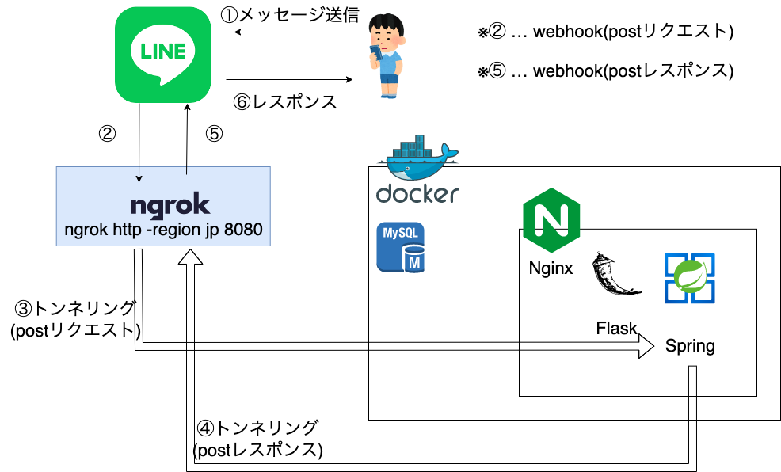
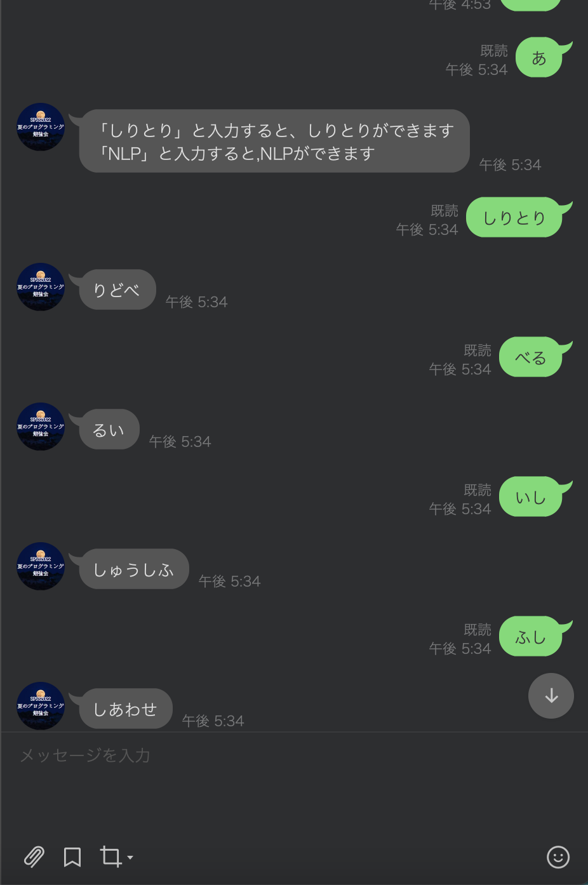
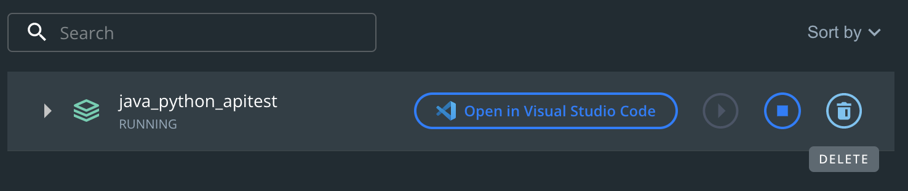

今回は1~4日目のまとめとして、「Linebot」を扱う。
実際にLinebotの構成をDockerで構築し、その仕組みを理解する。
いわゆる、バックエンドを体験してみよう。
前回「SQL+Docker」ではデータベースを扱いました。
バックエンドは、このデータベースの操作や、WebAPIの処理といった、ユーザからは見えない処理を担う分野です。
今回のLineBotの構成は以下のようになっています。

ユーザはメッセージを送信したら、何かしらの応答が得られることがわかります。ユーザはこの時、裏で何が行われているかはわかりません。
ngrok(エングロック)はトンネリングという技術を用いてローカルサーバーを一般に公開できるツールです。
もっと端的に換言すると、「http -> https」にしています。
lineはhttpで通信することができません。そのためhttpsで通信できるngrokが必要です。
理由としては、Linebotでは個人情報を扱います。httpでは個人情報が筒抜けになりますが、httpsだと個人情報が暗号化されるので、安全になるからです。
flask(フラスク、フラスコ)はwebフレームワークです。
一般にこうしたwebフレームワークでは「web API」を作ることができます。
web APIでは
こうしたことを行ってくれます。
googleの検索エンジンのChromeもこのwebAPIと言えるでしょう。
Springは略名で、Spring Frameworkと呼びます。
これもwebフレームワークです。
nginxはwebサーバーの1つです。
webサーバーは先のwebAPIの前で活躍します。
webサーバーを用いることによって「ユーザがどこにアクセスしているのか」を把握し、webAPIに流したり、振り分けたりすることができます。
webAPI側でもそういったことはできますが、webサーバはその特化型といえます。
個人的には汎用性の高い「Java」をおすすめしたいところだが、学習コストが高いので、バックエンドを自分で構築したい場合、まずは「PythonのFlask」を学習すると良いと思われる。
Java_Python_Linbot_Starters_kitにアクセスしてREADME.mdに記載されている手順通りにやってみよう。
まずはSPSS2022上でgit cloneをしてcd しておこう。
$ git clone https://github.com/Aruminium/Java_Python_Linbot_Starters_kit.git
$ cd Java_Python_Linbot_Starters_kit手順通りにできたらしりとりで遊んでみよう。

現在、ngrokとDockerが動いているので、辞める時はこれらのプロセスを止める必要がある。
基本的なプロセスを止める方法は「ctrl + (z or c)」で止められる。
まずはngrokのプロセスを止めよう。
Dockerのプロセスは「docker compose down」で止めることができる。
$ docker compose down
[+] Running 7/7
⠿ Container dbclient Removed 1.2s
⠿ Container nginx Removed 0.2s
⠿ Container spring Removed 2.4s
⠿ Container flask Removed 0.4s
⠿ Container mysql Removed 1.2s
⠿ Network java_python_apitest_nginx_network Removed 0.1s
⠿ Network java_python_apitest_default Removed 0.1sまた、DockerDesktopの場合はゴミ箱アイコンをクリックすると止めることができる。

「docker ps」コマンドで何も表示がされない。またはDocker Desktopの画面に何もない状態になっていることを確認する。
確認できたら、pushしよう
今回はLinebotを動作させて、バックエンドの仕組みについて勉強した。
今回バックエンドとして「JavaのSpring framework」を利用した。
興味がある方は、「Spring framework」の勉強をしてみることも良いかもしれない。
明日の後半1日目(6日目)は「HTML+CSS」を扱う。
後半の内容は前半より楽しく、易しいので期待してほしい。
改めて、この勉強会のコンセプトは「実装を主としている」ので、「なんとなくプログラミングがわかる」状態になっていれば幸いである。
あくまで、何を勉強するかの導火線にしていただきたい。
前半ではバックエンドの知識を学んだ。
後半ではフロントエンドについて学ぶ。
今後注意すべき事は、例えば「Java」ではバックエンドとフロントエンドを作ることができ、ややこしくなると言うことだ。
バックエンドをSpring Framework、フロントエンドをApache Wicketのフレームワークで作ることができる。
こうした時、「このソースコードはバックエンドなのかフロントエンドなのか」という状態に陥り、良くないコードを書いてしまう可能性があるので、しっかりとそのフレームワークの特徴を理解しておこう。